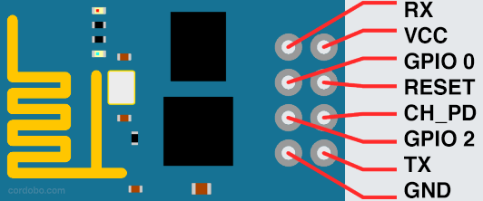
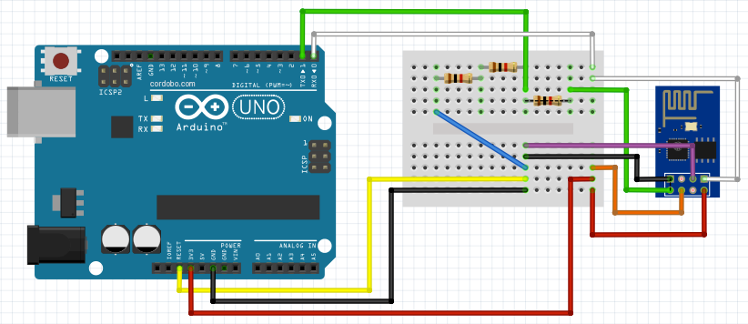
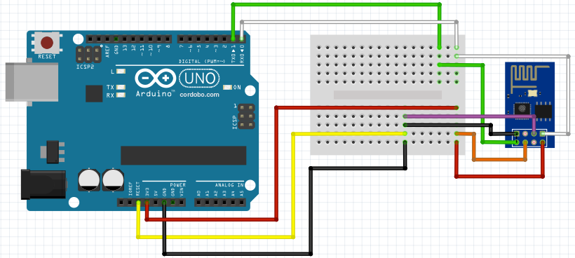

When I first got introduced to the world of the ESP8266, I had a real hard time to find a way to flash the firmware of the ESP8266-01 with an Arduino Uno. Many existing tutorials took essential information for granted or required additional hardware like a FTDI Serial TTL-232 USB cable, a USB-to-serial converter or a level shifter. Others were written specifically for breakout boards like the NodeMCU, SparkFun Thing or Adafruit Huzzah.
As I only had an Arduino and a barebone ESP8266-01 at my disposal, neither of these tutorials were viable. Eventually I managed to flash the ESP-01 firmware with pieces of information from Instructables, various blogs and youtube videos.
That’s why I wrote the missing step-by-step beginner tutorial on how to flash the ESP8266-01 firmware with an Arduino – it only requires an ESP8266, an Arduino, a USB cable and some wires to flash your ESP8266.
ATTENTION
The ESP8266 is rated at 3.3V and the Arduino UNO RX and TX pins are rated at 5V. The following circuits worked for me without damaging neither my ESP8266, my Arduino nor my laptop but a higher voltage can damage these devices. I will take absolutely no responsibility for any damages and you follow these instructions on your own risk. Only if you fully understand this and do agree, go ahead.
So let’s get started:
1. Bill of Materials:
Hardware:
- 1x Arduino Uno (a clone will do)
- 1x USB cable to power your Arduino from your computer
- 1x ESP8266-01 Module (black or blue, 8 pins)
- Jumper wires (male to male and female to male)
- 1x breadboard (or prototype shield) – optional
- 2x or 3x Resistors (for a 3.3V/5V voltage divider) – optional
Software:
- Arduino IDE
- Python 2, PIP, esptool
- Firmware for the ESP8266, I used Micropython but any firmware, e.g. NodeMCU, Espruino or Mongoose IoT will do
What you DON’T need:
- Voltage regulator or level shifter
- FTDI USB to TTL Serial
- External power supply
2. Install the required software
We need the following software to flash the ESP8266:
- Arduino IDE
- Python 2
- PIP
- esptool (installed via PIP)
- MicroPython (ESP8266 Firmware)
Install the Arduino IDE and Python 2 for your operating system. An older version of PIP ships with Python 2. Open your terminal/console to upgrade PIP:
pip install –upgrade esptool
If you get permission errors on Linux, try sudo:
sudo pip install –upgrade esptool
For now, we only need to download MicroPython. At the time of writing the latest release was esp8266-20161110-v1.8.6.bin – download and rename it to micropy.bin.
3. How to connect the ESP8266 and Arduino
We wire up a circuit to convert the Arduino into an USB-to-Serial converter which we then use to flash the ESP8266 with the new firmware. This is the ESP-01 pinout:

ESP8266-01 pinout
Wiring scheme:
UNO — ESP8266 (wire color)
RX — RX (white)
TX — TX (green)
GND — GND (black)
GND — GPIO 0 (purple)
3.3V — VCC (red)
3.3V — CH_PD (orange)
You can connect your ESP8266 to your Arduino Uno either with or without a voltage divider. A voltage divider transforms the Arduinos 5V TX/RX into the 3.3V needed by the ESP8266 TX/RX ports. You need three 1k Ohm or three 10k Ohm resistors.
I won’t go into detail, the Wikipedia Article provides some basic insights and sparkfun has a well written introduction on voltage dividers.
Additionally, we connect a jumper from RESET to GND on the Arduino (the yellow wire in the scheme). This transforms your Uno into a cheap TTL-serial-to-USB converter. Instead of setting the jumper, you can upload an empty sketch (see: 6. Optional: Upload an empty sketch to the Arduino).
3.1 Circuit with Voltage Divider:
The 1st option connects the ESP TX/RX, which runs on 3.3 Volts, with the Arduinos TX/RX, which run on 5 Volts, via our simple voltage divider (the three resistors).
You could use a voltage divider as well to power your ESP with the Arduinos 5V port. For now, we use your UNOs 3.3 V.

Arduino Uno/ESP8266 with voltage divider
.png){kind=link}

{kind=link}
3.2 Circuit without Voltage Divider:
The 2nd option is to connect the ESP8266 TX/RX ditectly to your Arduino. Remember, the ESP runs on 3.3V, while your Arduino has a 5V powered TX/RX. This option worked with my setup but be advised, it might damage your devices.

Arduino Uno/ESP8266 without voltage divider
{kind=link}
{kind=link}
{kind=link}
4. Connect your computer and Arduino via USB
Before you connect your computer with your Arduino via USB, double-check if the wiring is correct. Otherwise you risk shorts.
Then open the Arduino IDE, go to Tools > Port and select your Arduino device. It’s something like /dev/ttyACM0 (Arduino/Genuino Uno). The part /dev/ttyACM0 is the USB port we need later.
5. Test the ESP8266 connection
My ESP8266 came preloaded with firmware from AI-Thinker, which is good to send AT commands to check if the module and our test setup is working as expected before we flash the module with a new firmware.
Open Tools > Serial Monitor in your Arduino IDE and set “Both NL & CR” and Baud to 9600.
Send the following command to test:
AT
The output should be OK. If nothing comes up, try different baud rates such as 115200 or 57600 and retest.
Now try the following command:
AT+GMR
The response should be the current firmware version and release of your ESP8266:
AT version:0.40.0.0(Aug 8 2015 14:45:58) SDK version:1.3.0 Ai-Thinker Technology Co.,Ltd. Build:1.3.0.2 Sep 11 2015 11:48:04
If you want to learn more about AT commands, a list of commands can be found here: AT Command List.
6. Optional: Upload an empty sketch to the Arduino
Instead of setting the yellow jumper between GND and RESET, you can upload an empty sketch to your Arduino:
void setup() {
// put your setup code here, to run once:
}
void loop() {
// put your main code here, to run repeatedly:
}
7. Erase the flash
If the AT commands above worked as expected, we prepare the ESP8266 and erase the flash.
Open your terminal program/console and enter the following command – remember, /dev/ttyACM0 is the USB port we looked up in the Arduiono IDE earlier, so your’s might be different:
esptool.py --port /dev/ttyACM0 erase_flash
The esptool’s output:
esptool.py v1.2.1 Connecting… Running Cesanta flasher stub… Erasing flash (this may take a while)… Erase took 0.9 seconds
If errors pop up, remove the USB cable and plug it in again. This way you reboot your ESP8266. Within the next 5 seconds repeat the command.
8. Flash the ESP8266 firmware
Disconnect and reconnect the USB cable to reboot your ESP8266 module. Now enter the following command:
esptool.py --port /dev/ttyACM0 --baud 115200 write_flash --flash_size=detect 0 /home/myuser/downloads/micropy.bin --verify
Esptool will output the following:
esptool.py v1.2.1 Connecting… Auto-detected Flash size: 8m Running Cesanta flasher stub… Flash params set to 0x0020 Writing 569344 @ 0x0… 569344 (100 %) Wrote 569344 bytes at 0x0 in 48.4 seconds (94.1 kbit/s)… Leaving… Verifying just-written flash… Verifying 0x8a2dc (565980) bytes @ 0x00000000 in flash against /home/verwalten/Downloads/micropy.bin… — verify OK (digest matched)
9. Connect to your ESP8266 wifi
After you successfully flashed your ESP with MicroPython, the module exposes a new wifi Access Point (AP) with a SSID similar to “MicroPython-103432”.
When you used the jumper to short RESET and GND on your Arduino, remove the jumper and disconnect and reconnect the USB cable and the new wifi AP should show up in your list.
The password for the wifi is micropythoN (note the uppercase N) and its IP address is 192.168.4.1.
10. Congrats
Well done, you successfully flashed your ESP8266. Let me know in the comments, if everything worked as expected. In the next tutorial we flash the ESP’s firmware with Espruino and Mongoose IoT and run our first JavaScript-based webserver on the ESP8266.
9 responses to “Flash ESP8266-01 with Arduino Uno”
Your voltage divider is wrong.
Arduino Tx — resistor (1/3) — tap to ESP-01 Rx — resistor (2/3) – GND
That is correct, but I wonder if the ESP8266 is just fine with 2.5V. If so using 3 of the same resistor has two benefits for beginners – it doesn’t really matter what resistance is used as long as it isn’t too low. A lot of Arduino beginners have 100 ohm and 220 ohm resistors hanging around.
Indeed. Pin “O > RXD” should be read as “connect that arduino pin 0 to the RX of the other device.” Pin 0 on the arduino is the arduino’sTX, and it’s this line that needs the step-down to 3.3v.
Just to add, it’s good that you specify resistors in the 1000 ohm range (I use 2.2K and 4.7K) as it will reduce current simply seeping to ground and not be good for your devices. In the 1000 ohm region, there’s enough current getting through for the devices to see the signal properly.
Please give instructions for flashing firmware of my ESP-8266 (01) using Arduino UNO.
i was able to flash it successfully but I am not seeing any AP with the name relevant to Micro***. Infact i don’t see any new AP. I am not able send AT commands to ESP8266-01 as well. i am using Arduino uno to connect ESP. connections are made as per your circuit disgram (1st). Please provide some clarification.
while flashing firmware the result is slight different
esptool.py v2.1
Connecting….
Detecting chip type… ESP8266
Chip is ESP8266
Uploading stub…
Running stub…
Stub running…
Configuring flash size…
Auto-detected Flash size: 1MB
Flash params set to 0x0020
Compressed 601136 bytes to 392067…
Wrote 601136 bytes (392067 compressed) at 0x00000000 in 34.1 seconds (effective 141.0 kbit/s)…
Hash of data verified.
Leaving…
Verifying just-written flash…
(This option is deprecated, flash contents are now always read back after flashing.)
Flash params set to 0x0020
Verifying 0x92c30 (601136) bytes @ 0x00000000 in flash against C:\Users\dell\Downloads\micropy.bin…
— verify OK (digest matched)
Hard resetting…
and also the new wifi access didn’t shows up
When GPIO 0 is connected as shown in the diagram, I am unable to communicated through AT commands. If I unplug the connection, I am able to resume communication.
For me AT commands do not work either way
C:\esptool-master>esptool.py –port COM5 erase_flash
esptool.py v2.3-dev
Connecting…….._
Detecting chip type…
A fatal error occurred: Timed out waiting for packet header